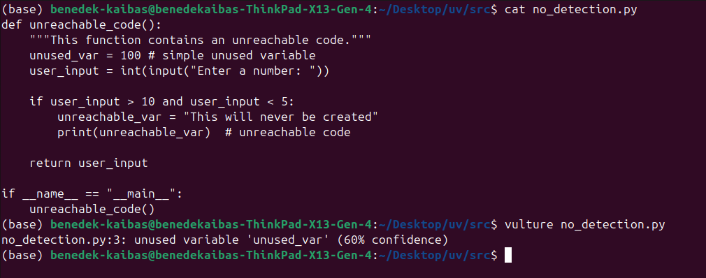

Build a Bug Detection System
Explore why bug detection is uncomputable
What is Uncomputability?
- It isn’t possible to algorithmically solve or do
- There isn’t one program that can complete the task with every input
Why is it Uncomputable?

What problems can you solve?
- You can write programs that detect bugs
- Can also detect specific kinds of bugs
- Bug detectors for specific programs
Bug Detecting through Fuzzing
#| autorun: true
#| max-lines: 7
import random
def crash_on_input(source_code: str, input: str = ""):
"""Run a program with input and check if it crashes."""
try:
env = {"input": input}
exec(source_code, env)
return f"Program ran successfully on input|{input}|"
except Exception as e:
return f"Program crashed on input|{input}| with error: {e}"
test_source_code = """def fibonacci(n):
if n <= 1:
return n
return fibonacci(n-1) + fibonacci(n-2)
fibonacci(int(input))"""
choices = ["a","b","c","d","e","f","g","h","i",1,2,3,4,5,6,7,8,9]
inputs = [random.choice(choices) for _ in range(5)]
for input in inputs:
print(f"{crash_on_input(test_source_code, input)}")What are unused variables?
#| autorun: false
"""File that contains function that has unused variable in it."""
def uv():
"""Function that has an unused variable in it."""
iterator = 0
limit = 100 # we use limit as an unused variable which our linter program has to catch
while iterator != 50:
print(iterator)
if __name__ == "__main__":
uv()
Our Methodology to Detect Unused Variables
- Creating an AST
- Opening the AST and check how many times a given variable occurs in the tree.
Detecting Unused Variables
#| autorun: false
import ast
def create_ast(source_code: str):
parser = ast.parse(source_code)
create_ast = ast.dump(parser, indent=4)
return create_ast
def read_ast():
source_code = """def uv():
iterator = 0
limit = 100 # we use limit as an unused variable which our linter program has to catch
while iterator != 50:
print(iterator)
if __name__ == "__main__":
uv()
"""
syntax_tree = create_ast(source_code)
for line in syntax_tree.splitlines():
split_lines = line.strip()
word = "'limit'"
if word in split_lines:
count_word = word.count("'limit'")
if count_word == 1:
print(f"We found an unused variable: {word}")
else:
print("The file you have provided does not have unused variables!")
read_ast()
Is it Possible Not To Detect Unused Variables?
- Short answer: Yes!
- Altough it is easy to detect unused variables!
- Even in most cases static analyzers detect unused variables in some cases they cannot detect them
Unreachable Code
def unreachable_code():
"""This function contains an unreachable code."""
unused_var = 100 # simple unused variable
user_input = int(input("Enter a number: "))
if user_input > 10 and user_input < 5:
unreachable_var = "This will never be created"
print(unreachable_var) # unreachable code
return user_input
if __name__ == "__main__":
unreachable_code()
Output Using Vulture

TypeError
#| autorun: true
#| max-lines: 15
import ast
code = '''
def greet(name: str) -> str:
return "Hello, " + name
x=42; msg=greet(x)
'''
t=ast.parse(code)
class Fix(ast.NodeTransformer):
def visit_Call(self,n):
if isinstance(n.func,ast.Name) and n.func.id=='greet' and n.args:
a=n.args[0]
if not (isinstance(a,ast.Constant) and isinstance(a.value,str)) and not (isinstance(a,ast.Call) and isinstance(a.func,ast.Name) and a.func.id=='str'):
n.args[0]=ast.Call(func=ast.Name(id='str',ctx=ast.Load()),args=[a],keywords=[])
return self.generic_visit(n)
print(ast.unparse(Fix().visit(t)))Detecting Unclosed Print Statements
#| autorun: true
#| max-lines: 15
import ast
def check_syntax(text: str):
try:
ast.parse(text)
print("No syntax errors found.")
except SyntaxError as e:
print(f"Syntax error: {e}")
test_source_code = """def calculate_sum(numbers):
total = 0
for n in numbers:
total += n
if total > 10:
print("Large sum"
else:
print("Small sum")
return total
calculate_sum([1, 2, 3, 7])
"""
check_syntax(test_source_code)
- Using AST to not to execute but to review the code by creating a string
- If the code did not have defects in them, it still would not print anything
- The unclosed print statements or parantheses will always be caught by ast.parse() method
Detecting Division by Zero
#| autorun: true
import ast
class DivisionByZeroDetector(ast.NodeVisitor):
def visit_BinOp(self, node):
if isinstance(node.op, ast.Div):
if isinstance(node.right, ast.Constant) and node.right.value == 0:
print(f"Possible division by zero on line {node.lineno}")
self.generic_visit(node)
def check_code(source):
tree = ast.parse(source)
detector = DivisionByZeroDetector()
detector.visit(tree)
test_source_code = """def division_by_zero_example(x: int, y: int):
division = x / y
ans = division / 0
return ans"""
check_code(test_source_code)